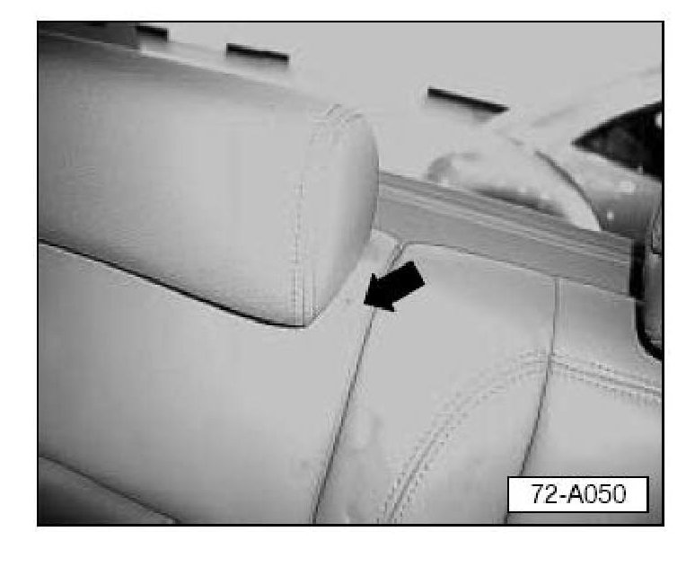
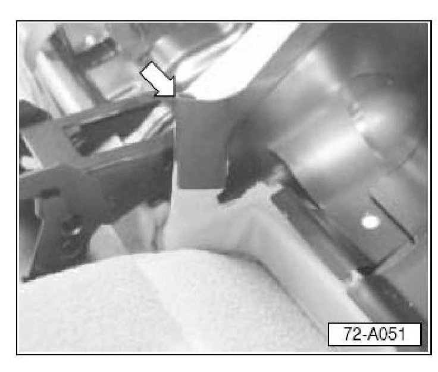
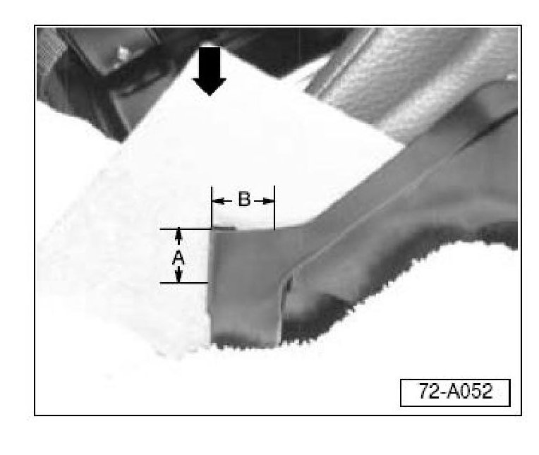
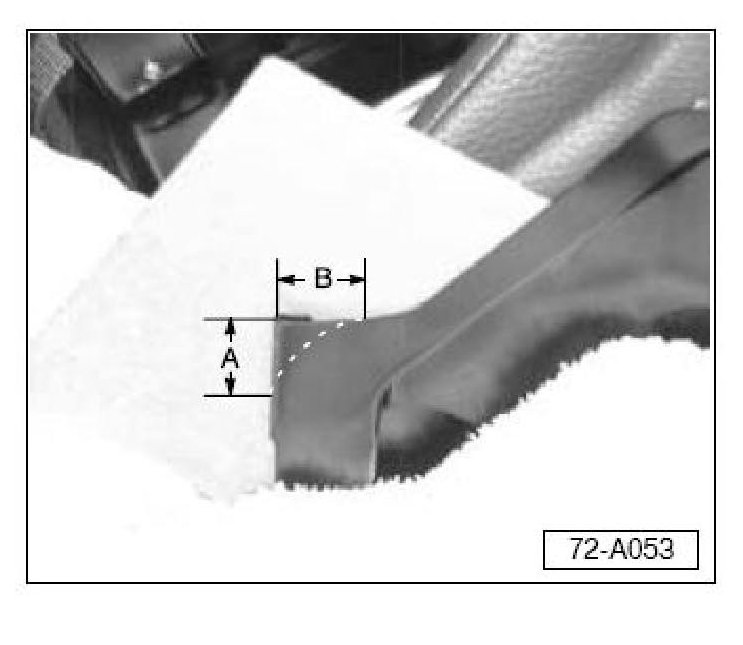
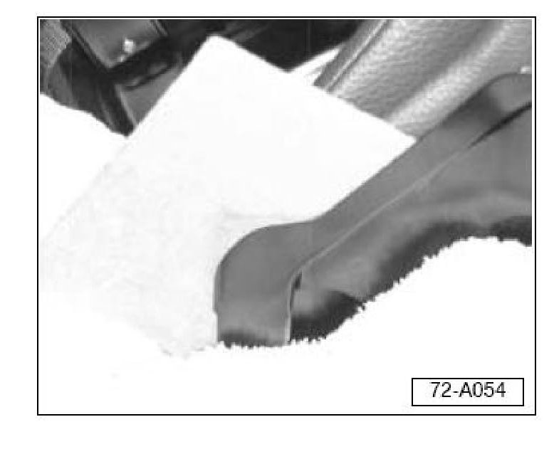
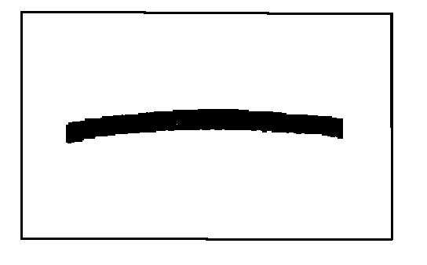
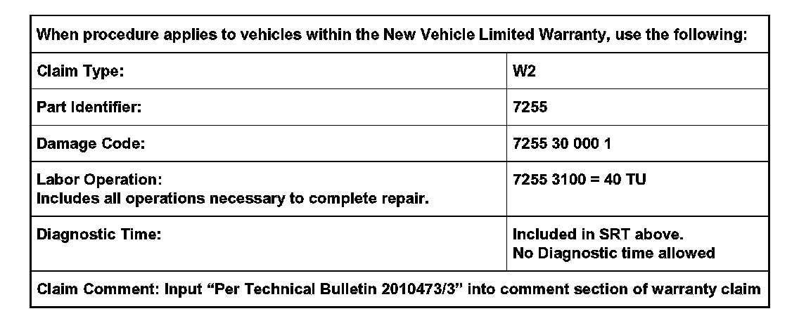
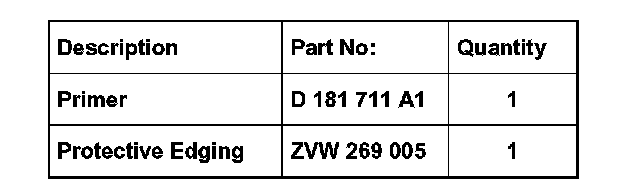

Interior - Rear Upper Seat Cover Contacts Lower Frame
72 06 01Jun. 7, 2006
2010473/3
Condition
Rear Upper Seat Cover Makes Contact with Lower Seat Frame
Left upper corner of right rear seat back makes contact with lower seat frame when utilizing fold down seat.
72 06 01 Jun. 7, 2006, 2010473/3, Supersedes Technical Bulletin Group 72 number 05-04 dated May 12, 2005 due to additional model years and VIN break. (2010473/2)
Technical Background
While releasing the rear seat back to extend the cargo space, the rear seat back catch may not engage the engagement hook in the front seat back. This allows upper seat back cushion contact with the bottom seat frame. This contact over time may cause a cut or perforation on the seat cover.
Production Solution
The bottom seat frame was modified in production as of February 2, 2006 with VIN 7L_6D054734.
Service
Perform following procedure if customer exhibits concern in regards to rear seat back cover damage.

^ Inspect right rear seat back cover in upper inboard side (arrow) for signs of chafing.
If chafing is present, modify right lower seat frame as follows:
^ Remove rear seat head rests.
^ Fold rear seat bottoms into cargo loading position.
Inspect inboard seat frame hinge, on right seat for protrusion past seat material.

^ If lower seat frame metal is equal to or above seat cushion material (arrow), reshape seat frame corner as follows:
Note:
Install a protective barrier (approx. 3in x 3in) -arrow- between seat material and seat frame to help stabilize the metal being trimmed and protect seat cover.

^ Locate rolled metal edge of seat frame and measure down 25 mm (Dimension A). Paint mark or scribe location of measurement. Measure horizontally across top of the seat frame from rolled metal edge 28 mm (Dimension B) and mark location.

^ Scribe off an oval radius between the two marked locations on the seat frame.
Tip:
Protect seat back and floor area with water dampened shop towels to prevent damage and debris build up during repair.

^ Using a cut-off wheel, remove protruding corner of seat frame along radius.
Note:
Install a protective barrier between seat material and seat frame to help stabilize metal being trimmed and protect seat cover.
^ Allow trimmed area to cool.
^ Place a piece of paper over repaired area and fold seat back down into storage position.
^ Ensure that seat back stop is engaged into lower seat frame rest.
^ Apply slight pressure to seat back corner above repaired area when in the down position and lightly pull the paper away from repair area.
If resistance is felt when removing paper:
^ Trim/file area again until no resistance is felt.
Note:
Make sure no sharp edges exist on repaired area before priming. If no resistance is felt when removing piece of paper:
^ Touch repair area to assure no sharp edges.
^ Prime seat frame exposed edges with primer. See Required Parts and Tools.
^ Allow primer to completely dry.
Tip:
It may necessary to apply several coats of primer to appropriately cover repaired area. One bottle of primer will do many vehicles and is therefore considered shop supply.

^ Install protective edging on top of the repaired edge. See Required Parts and Tools.
If there has been damage to upper seat cover:
^ Replace seat cover as necessary. See Repair Manual, Body Interior, Group 74 - Seats - Padding, Covers.

Warranty

Required Parts and Tools
Tip:
Part number(s) are for reference only. Always see ETKA for the latest part(s) information.